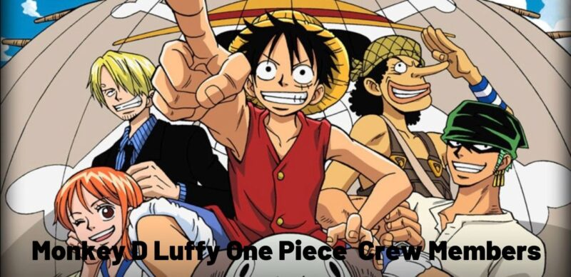

Monkey D. Luffy, also known as "Straw Hat Luffy" and commonly as "Straw Hat", is the founder and captain of the increasingly infamous and powerful Straw Hat Pirates, as well as the most powerful of its top fighters. He desires to find the legendary treasure left behind by the late Gol D. Roger and thereby become the Pirate King, which would help facilitate an unknown dream of his that he has told only to Shanks, his brothers, and crew. He believes that being the Pirate King means having the most freedom in the world.
Luffy has gone up against numerous global powers around him, starting with fighting the most powerful pirates in the East Blue and moving to clashes against the Marines, Seven Warlords of the Sea, Cipher Pol, World Nobles, and even the Four Emperors of the Grand Line, emerging victorious in a majority of these battles. He invaded and indirectly caused the annihilation of Enies Lobby, escaped the impregnable Impel Down, and was a focal figure in the Summit War of Marineford. He has also either defeated or befriended seven of the eleven known past or present Warlords prior to the organization's dissolution. Furthermore, Luffy has invaded the territory of the Four Emperors on multiple occasions and eventually managed to defeat one. Luffy's accomplishments and heritage have caused him to be labeled as a "Dangerous Future Element" while in the process gaining a reputation for being "reckless" and, in some cases, "insane," earning the wrath of Fleet Admiral Sakazuki, the Marine Headquarters, and even the World Government.
The first crew member to join the Straw Hats, and the second friend Luffy made out at sea, Roronoa Zoro is a former bounty hunter that hunted down pirates. He has become one of Luffy's most reliable crew mates due to his unwavering loyalty to him. Even though the two can sometimes clash they highly respect and admire each other. They are good friends and are easily the deadliest duo among the Straw Hats, and out of all the crew members, Zoro and Luffy share the most apparent ‘brothers in arms’ relationship.
Nami, who was originally part of the Arlong Pirates, is the second person to join Luffy's crew. She and Luffy share one of the closest relationships among the Straw Hats and have a mutual reliance on each other, with Luffy relying on Nami as his navigator and for day-to-day tasks whilst Nami relies on Luffy as a pillar of strength during dangerous and frantic times. The two are often seen arguing due to Nami getting frustrated by Luffy's antics and stupidity and Luffy being annoyed at Nami for being overbearing and ruining his fun.
Usopp, the former captain of the ‘Usopp Pirates’, became the third member to join Luffy's crew. The two share a close bond of brotherly love and act like best friends. Whilst Usopp is cowardly and weak Luffy does not disparage him for it in the slightest and values him as a crew member, being distraught when he was forced to kick Usopp out and overjoyed when he had returned. They are seen engaging in silly antics on the ship and the two are notorious for being the idiots of the crew. Like Nami and Chopper, Usopp greatly fears Luffy's lust for dangerous adventures.
Sanji is a former cook of the Baratie and the fourth member to join the Straw Hats. He is arguably one of Luffy's favorite crew mates because of his incredible cooking skills that satisfies his gluttonous nature. He is somewhat more antagonistic to Luffy than most, as he gets frustrated by his reckless nature and dimwitted-ness, but nonetheless respects him immensely and values him as his captain and as his friend. He was in tears from having to fight Luffy after he had left the crew and was delighted to return to them, as was Luffy, who was excited for him to cook again.
Buggy the Star Clown (in Japanese: 道化のバギー, Senryō Dōke no Bagī), also known publicly as Buggy the Clown, is a clown pirate captain and a major antagonist in the manga and anime One Piece. He first appears as the main antagonist of the Orange Town Arc, but later becomes a major ally during the Impel Down Arc and the Marineford Arc. He is the captain of the Buggy Pirates, whose members looked like circus performers (excluding Alvida, a former pirate captain who joined Buggy's crew seeking mutual revenge on the series protagonists, Monkey D. Luffy). However, said crew were separated from him after he was arrested and sent to Impel Down, the most impenetrable prison in the One Piece world, and tearfully gave up on any hope of rescuing him.
Dracule "Hawk-Eye" Mihawk is a major antagonist in the manga/anime franchise One Piece. He is a pirate famed for being the Strongest Swordsman in the World. His title has attracted many swordsman that seek to battle with him, including Roronoa Zoro, whose main goal in life is to claim that very title from him. He used to be called the Marine Hunter. Mihawk once served under the World Government as a member of the Seven Warlords of the Sea and was one of the few members to follow orders, though under his conditions. Likewise, he took part in the Summit War of Marineford where he assisted the Marines in defeating the Whitebeard Pirates. Afterwards, he encountered Zoro on his residence and helped train him in Haki after witnessing his determination.
Arlong considers humans to be inferior beings, and is very cruel to them. He thinks nothing of killing a town full of humans, although he seems to prefer controlling people with money and deals (like Nami and Nezumi). He is also rather easy to anger, going berserk after he was attacked by Usopp and having to be dragged back to his base by his crew to prevent him from destroying the whole town. He does not seem frightened by anything, and his Fishman strength has made him extremely confident that he and his crew are virtually invincible. After Nezumi told Arlong he as a Marine wouldn't stay for fear of being seen in Arlong Park, at this point Arlong invited the Marine to a meal and offered to kill anyone who dared report him.
His grandfather Garp used harsh and unorthodox training methods to make him grow stronger, such as leaving him alone in the wilderness as a young child, tying him to balloons so he would float away, or throwing him into a bottomless pit, as well as several years of further rigorous training in the extremely harsh environments of Mt. Colubo and Rusukaina. By the time he began his quest to become Pirate King, Luffy had attained incredible physical strength, which he demonstrated by knocking out the Lord of the Coast with a single punch.
Luffy possesses tremendous speed, agility, and reflexes. While knocked on his back, he was quickly able to escape from a point-blank explosion during his fight with Foxy, jumping onto a nearby mast before he was caught up in the blast. When he fought Blueno and Rob Lucci on Enies Lobby, Luffy was able to keep up with their incredibly fast Soru movements even without using the massive speed boost of his Gear 2 form. When battling Dracule Mihawk during the Summit War of Marineford, he was able to dodge the strikes of the world's greatest swordsman, including ducking under one that completely cleaved through a faraway glacier.
Luffy has shown the ability to take massive amounts of physical punishment but still remain conscious and able to fight. As a child, Luffy was brutally beaten by Porchemy's spiked gloves to get information out of him, but Luffy took the beating without revealing anything. He was poisoned in Arabasta Kingdom by Crocodile's poison hook but remained conscious long enough to defeat the Warlord. He took multiple blows from Foxy's spiked gloves but did not fall.
Luffy possesses immense endurance stemming from his great durability and willpower. As a child, he developed endurance when his grandfather put him through various training methods. When following Ace on a long and dangerous trek from Mt. Colubo to Gray Terminal, as he accompanied Ace and Sabo on their adventures through the wilderness. By far his most noteworthy feat was surviving exposure to an incurable amount of poison after fighting Magellan in Impel Down. When brought before Emporio Ivankov, Luffy was given hormones to give him the chance to fight for his life for two and a half days at the cost of his lifespan. He not only successfully fought to stay alive but returned to consciousness in just 20 hours.
Normally, Luffy can be prone to making bad decisions. However, while fighting, he possesses an uncanny instinct that has often resulted in him performing atypical actions that end up helping him. When confronted by multiple duplicates of Mr. 3 on Little Garden, Luffy was instantly able to find and attack the real one thanks entirely to instinct.
https://onepiece.fandom.com/wiki/Monkey_D._Luffy
https://onepiece.fandom.com/wiki/Monkey_D._Luffy/Relationships
https://onepiece.fandom.com/wiki/Monkey_D._Luffy/Abilities_and_Powers
https://villains.fandom.com/wiki/Category:One_Piece_Villains
Luffy image from: https://wiki.sportskeeda.com/one-piece/monkey-d-luffy-in-one-piece
Luffy and crew image from: https://onepiece-merchandise.com/monkey-d-luffy-one-piece-crew-members/